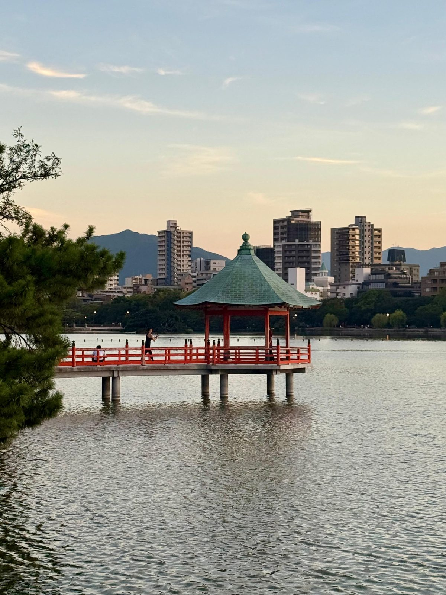
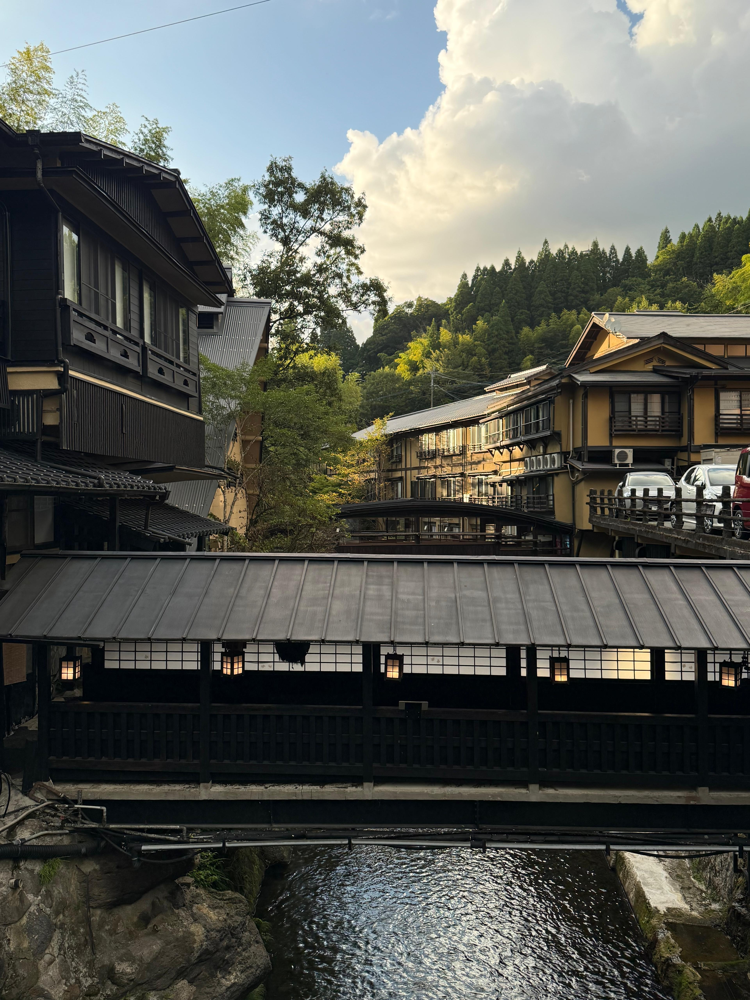

2022 - 2026
Overview
Japan is definitely a beautiful country and a place worth visiting, especially during the cherry blossom season.
We went once between November and December and a second time between August and September (definitely warmer during those months).
Food is also amazing, especially if you have the freedom to roam around, enter any of the local very small and cute restaurants, and try whatever you like.
However, when it comes to gluten-free and vegetarian (or vegan), it is a (huge) bit more complicated, since most noodles are wheat-based, soy sauce is in almost everything, fish sauce, meat stock or gelatine, starch, and barley (contained in e.g., bottled tea from the convenience stores or vending machines) are all common ingredients.
A general workaround for finding gluten-free food is to stick with sushi, sashimi, and some unseasoned meat (barbecue for instance).
Another option for when in time of crisis, is to get onigiri with grilled salmon or spicy roe (plum option for vegetarians) from Lawson or 7-Eleven.
There, you can also find some gluten-free snacks, like rice crackers, some microwaveable rice, frozen vegetables, and ice cream from Haagen Dazs (stick to Macadamia Nuts, Green Tea, Strawberry, and Vanilla).
Finally, Japanese people are generally very helpful and will try to accommodate your dietary needs if you ask politely.
Since language is a barrier, it is a good idea to have a translation app with either microphone or Japanese keyboard.
One thing that we have been very unlucky with is cocktails, as we didn't have any decent one (either they were too watered down or they just didn't taste good).
We found extremely helful the FoodFit Japan app, which allows you to scan the ingredients list lable of any product and check if it is gluten-free, vegetarian, vegan, or else.
In combination with the Google Translate app with the camera feature, you will hardly have any surprises!
Kitakyushu
We spent 6 days in Kitakyushu for a work event, taking the Shinkansen from Osaka (~2h travel time).
It is a small city but it feels quite authentic with the network of small streets and alleys, with typical restaurants, pachinkos, karaokes, and so on.
We visited the Kokura castle, which is very beautiful from the outside, and it has a small museum inside, although the interiors are quite new due to the reconstruction after the fire.
Worth visiting is definitely the Japanese garden inside the castle premises, where you can also do a tea ceremony where you can prepare some matcha accompanied by a local sweet based on mojiko and hence gluten-free.
We stayed at the Rakuten Stay Kokura Station, which is a clean hotel at a reasonable price. It is also very central and offers a small kitchenette which is quite convenient given the food options.
Where to Eat in Kitakyushu
This is the place where we honestly struggled the most to find food.
However, there are a few options available for those with dietary restrictions.
- グルテンフリー 串カツ 極 小倉店.
This restaurants offers deepfried skewers (kushikatsu) in rice flour and some other options.
The owner is very nice and will help you find something gluten-free. The place is very small as it can only accommodate a few customers at a time, and not super easy to find, as you need to enter a building and walk a long corridor.
For the skewers, they have meat (wagyu beef, chicken, pork), seafood (shrimp, cod, scallop), vegetables (onion, shiitake mushroom, and another local root), and others (cheese, würst). For these, omakase is also available, ranging from 6 to 13 pieces.
Alternatively, among the plates we tried an omelette (ask to remove the bonito flakes to make it vegetarian), and a delicious seaweed salad.
The good drinks we tried are the oolong tea and the ginger beer. Skip the gin tonic as it tastes just like sparkling water, without neither the tones of the tonic nor the gin.
Ratings: 5/5: quality is just amazing and it's also cheap.
5/5: quality is just amazing and it's also cheap. 2/5: options are limited to a few items and adapting them to be fully vegetarian reauired some interactions with the chef.
2/5: options are limited to a few items and adapting them to be fully vegetarian reauired some interactions with the chef.
- バル食堂 COZY.
This restaurants offers a limited selection of gluten-free curries with rice.
Options include chicken, pork, beef, or a combinations of the above. I tried the curry with beef and it was delicious.
Unfortunately, there are no vegetarian options available, so we just asked them for a plate with rice and vegetables.
Good enough if you have an emergencies and you are starving but otherwise not really worth it.
Ratings:- 3/5: good quality at a low price, but very limited options.
- 1/5: basically no options.
- .Blue21 UOMACHI店.
Despite the name recites "ALL Gluten Free & Vegan", our fellow engineers would rather write "(ALL Gluten Free) & Vegan", as the vegan options are just a handful.
The cuisine is mostly Western but with some Japanese influences, and it uses natural and healthy ingredients.
We had a delicious vegetable curry accompanied by a plate of appetizers and a potato soup. The quice (with pork) was however not good at all.
Being the only gluten-free and vegan restaurant in the area, we went there basically every day Sunday to Tuesday just to find out it was close, to eventually make it on Wednesday just to be disappointed. The restaurant is very small, but it feels cozy and intimate. However, the portions are very small and the price is off the charts for what we have seen in this area.
Ratings:- 3/5: everything is GF but I was hoping for something more traditional.
- 4/5: few options but quite good.
- Sai's.
This could be a good option if you feel like having Japanese barbecue, as they can just give you some meat to grill on charcoal.
I also ordered some sashimi but honestly it was not that good.
The staff was also very kind to accomodate the vegetarian option, which was just a plate of vegetables to grill with a bowl of rice.
All in all, not really a good value for money, but we didn't explore much of the meat options as it didn't feel too safe. Also, not really a good value for money, and definitely not the right place for a vegetarian.
Ratings:- 2/5: I could have had this at home.
- 1/5: basically no options.
- Spice Master.
This is an Indian restuarant just inside the food court of the Kokura train station.
As most of the indian food, it is naturally gluten-free, just make sure to ask for no naan bread and no papadum, and you will be fine.
They have a good seelction of curries, most of them also vegetarian (vegetable curry, peas curry, paneer).
The price is slightly higher than average for the portion size, which is however good enough for a meal.
Ratings:- 4/5: if you like indian food, this place might just save you here.
- 5/5: not traditional, but delicious and filling.

Fukuoka
Fukuoka is definitely bigger and more frenetic than Kitakyushu, but still not as massive as Tokyo.
We stopped here one night on our way to Kurokawa Onsen from Kitakyushu, and another night on our way back from Kurokawa Onsen to Kyoto.
We stayed in one of the hotels around the Hakata station, which is very convenient but we found weekend prices three times more expensive than weekday prices.
Given the limited time we had, we only managed to explore the Sumiyoshi Shrine and the Ohori Park, which we reached at sunset for stunning views.
We also recommend stopping by the Canal City Hakata, which is a shopping and entertainment complex with a canal running through it.
The complex has a variety of restaurants and shops, such as the Gundam Base, which is a must-visit for fans of the popular anime series.
The Hakata station is also a quite busy area with a lot of restaurants and shops, very easy to get lost in it!
Where to Eat in Fukuoka
From the size of it, it seems that Fukuoka has a lot of restaurants worth exploring, but given our limited plan, we stick to what we could find on our beloved app.
- Lotus Palace Hakata.
This vietnamese restaurant is located in the Hakata station, and either we are very bad or this place is like Isla de Muerta in Pirates of the Caribbean: a place that can be found only by those who have been already.
Once you are in Hakata station, you need to find an elevator, usually located in the first or second floor. Then, you need go all the way up to the 10th floor. The restuaurant is located in one of the two ends of the floor, depending on how you got there. The restaurant can host several guests, but it is likely that you will need to sign up for a waiting list.
The menu is labelled with gluten-free and vegan options and the staff was very careful and accomodating.
Ratings:- 5/5: many gluten-free options and all are delicious.
- 4/5: a few vegetarian options (even fewer gluten-free and vegetarian), but exquisite.
- Danny Churros 博多店.
This is a small churroos shop located in the Canal City Hakata. It offers a variety of churros and similar deep fried sweets, all of which are gluten-free as they are made from rice flour.
The churros are very crunchy and delicious. Recommended if you want to have a snack while you browse the stores.
Ratings:- 5/5: all the churros are gluten-free.
- 5/5: naturally vegetarian so no concerns.

Kurokawa Onsen
As the name suggests, Kurokawa Onsen is a small town famous for its hot springs (onsen).
It is located in the mountains of Kumamoto Prefecture, and it is a popular destination for those looking to relax and enjoy the natural beauty of the area.
It can be reached by bus from Fukuoka or Kumamoto, and it takes about 2-3 hours to get there.
The town has a traditional Japanese atmosphere, with narrow streets lined with ryokan (Japanese inns) and small shops selling local crafts and souvenirs.
The main activity in Kurokawa Onsen is purchasing a pass with 3 stickers that allows you to visit 3 of the several onsen in the area. The pass can be purchased at the tourist information center or at participating ryokan, and it is valid for six months.
Once you run out of stickers, you can purchase another pass or pay for individual onsen visits.
We stayed at the Okyakuya Ryokan, which is the only ryokan in the area that can accomodate for gluten-free and vegetarian diets upon request.
The ryokan is very traditional and cozy, with tatami mat rooms and futon bedding. The staff was very friendly and helpful, and they also speak good English.
The other onsen we visited were Yamamizuki, Nonohana, Shinmei-kan, Fumoto, and Ikoi.
Where to Eat in Kurokawa Onsen
The only place where is safe to eat in Kurokawa Onsen is the Okyakuya Ryokan, but don't worry, the food is delicious, from the Ryokan garden or from local farms, and it is also very well presented.
We had a traditional Japanese dinner with several courses, including sashimi (salmon and horse meat - tofu for vegetarians), tempura, grilled fish, soups, and steamed vegetables, mushrooms, and wagyu beef (or tofu).
The breakfast was also very good, with rice, soup, beans, and vegetables. Everything was delicious and very abundant!
-
Ratings:
- 5/5: all the food was extraordinary, especially the sashimi.
- 5/5: several courses of tofu in different variations and the soup in particular was excellent.